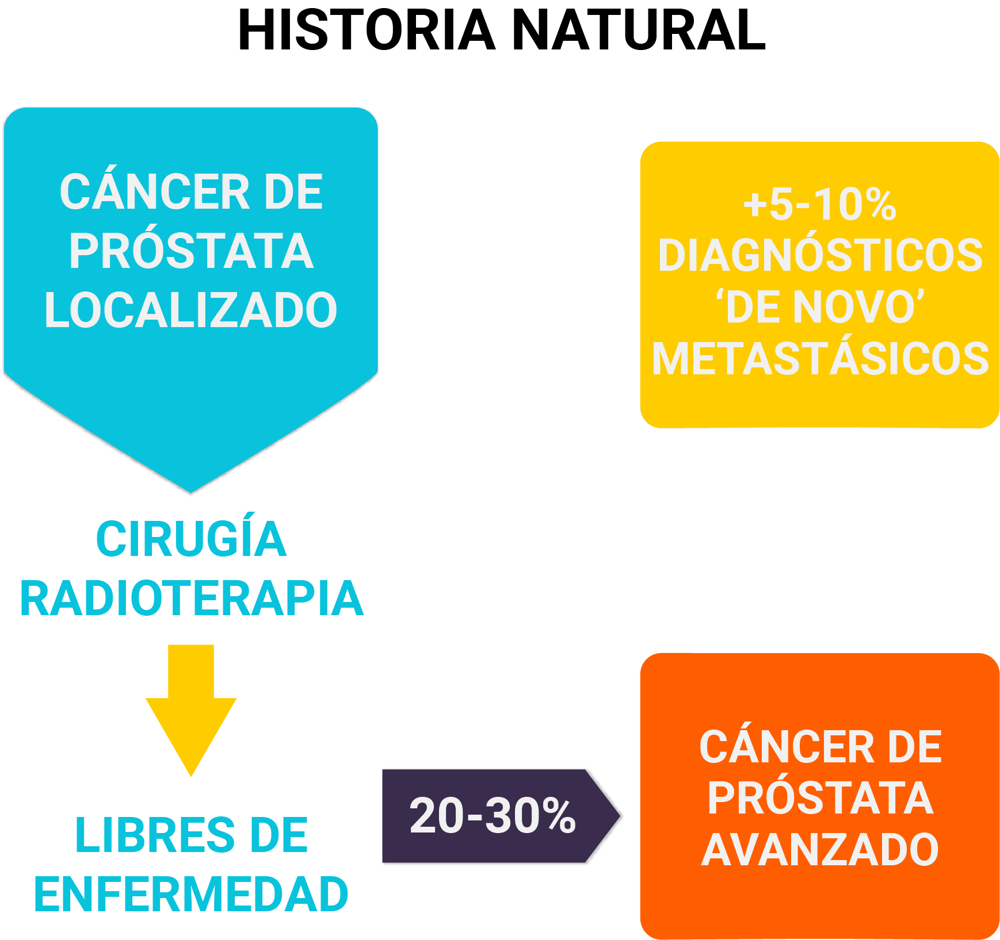
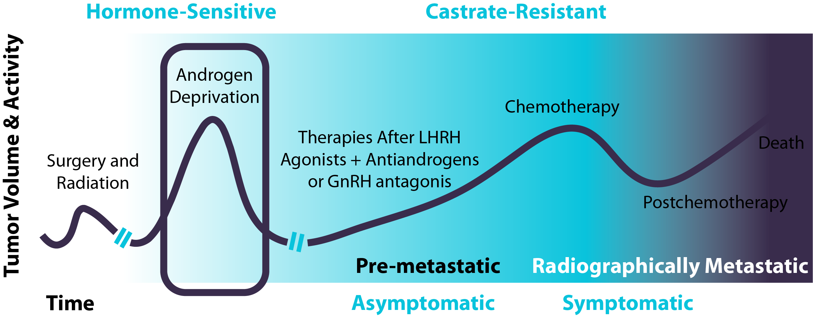
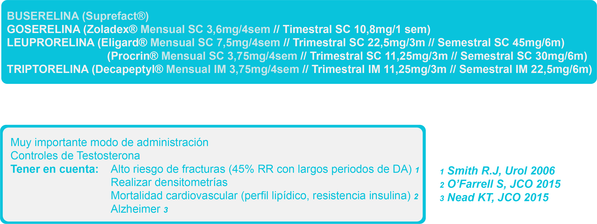
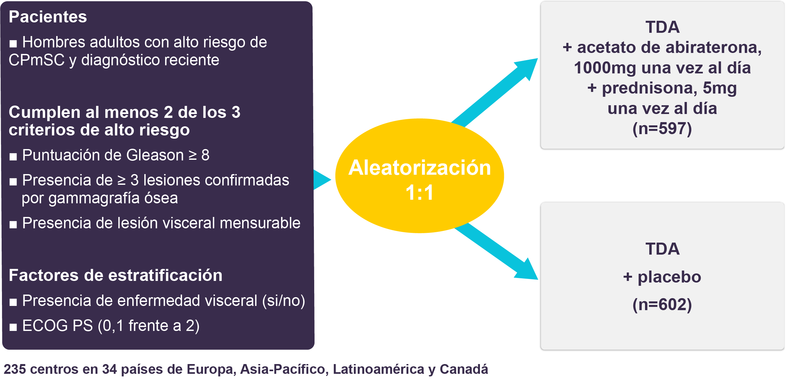

A pesar de la eficacia del tratamiento radical hasta un 20-30% de los pacientes con cáncer de próstata localizado desarrollará finalmente una recurrencia metastásica del cáncer de próstata. A este porcentaje habrá que sumar otro 5-10% de pacientes que debutarán directamente con enfermedad metastásica.
Los pacientes con enfermedad avanzada serán tratados mediante maniobras hormonales basadas en la supresión de andrógenos como son los análogos de LHRH que producen una castración química y los antiandrógenos, logrando controlar la enfermedad un período variable que puede oscilar desde meses a varios años. Esta etapa se conoce con el nombre de cáncer de próstata hormonosensible (CPHS) o hormono “naive”. Importantes novedades en el tratamiento de estos pacientes han ocurrido recientemente, impactando positivamente en su pronóstico.
La vía de andrógenos es la vía de señalización más importante involucrada en la supervivencia de las células tumorales. En 1941, Huggins y Hodges evaluaron el efecto favorable de la castración quirúrgica y la administración de estrógenos sobre la progresión del cancer de próstata metastásico.
Actualmente la maniobra de deprivación androgénica más empleada no es la quirúrgica (orquiectomía) sino la castración química (actuando a nivel del eje hipotálamo- hipofisiario). Así, la producción de testosterona puede bloquearse con dos tipos de tratamientos: los agonistas de la LHRH (GnRH) y los antagonistas de la LHRH (GnRH). Los agonistas de la LHRH se han utilizado desde hace más de 25 años contra el cáncer como próstata. Debido a que activan los receptores de LHRH, inicialmente causan un aumento en la producción de hormona luteinizante (LH) y hormona folículo estimulante (FSH) en las células de la pituitaria en el cerebro, lo que provoca un aumento en los niveles de testosterona, pero después de un tratamiento continuado, las células pituitarias pierden sus receptores de LHRH y se suprime la producción de LH y FSH. Los agonistas de la LHRH incluyen tratamientos como goserelina (Zoladex o Novgos), acetato de leuprorelina (Prostap o Lutrate), triptorelina (Decapeptyl o Gonapeptyl Depot) y acetato de buserelina (Suprefact).
Análogos LHRH. Primera maniobra hormonal
Los antagonistas de la LHRH (también conocidos como antagonistas de la GnRH) reducen los niveles de testosterona más rápidamente que los agonistas de la LHRH, y no causan aumento temporal en los niveles de LH y FSH; incluyen tratamientos como degarelix (Firmagon), abarelix (Plenaxis), y relugolix. Abarelix fue retirado por causar reacciones alérgicas grado 4 en ensayos clínicos.
El bloqueo de la producción de andrógenos a nivel central con análogos o antagonistas de LHRH, se conoce como bloqueo hormonal simple.
La combinación de los fármacos que actúan sobre la estimulación de la producción de testosterona a nivel central (análogos/antagonistas LHRH) junto con bloqueadores periféricos de los andrógenos (anti-andrógenos) se conoce como bloqueo hormonal completo.
Los anti-andrógenos van a actual a nivel del receptor de andrógeno (RA) bloqueando su acción. Tienen una estructura química que es similar a la testosterona, y compiten con la testosterona por su unión al RA. Una vez unidos al RA, lo activan para dimerizarse, al igual que la testosterona, pero una vez que los RA dimerizados alcanzan el núcleo, no pueden funcionar correctamente y no pueden activar los genes diana. Los antiandrógenos clásicos incluyen la bicalutamida (Casodex), flutamida (Drogenil) y el acetato de ciproterona (Cyprostat).
Se ha demostrado un impacto de supervivencia marginal del bloqueo hormonal completo sobre el simple, por lo que su uso está restringido a aquellos casos sintomáticos, en los que buscamos una supresión hormonal más rápida. El bloqueo hormonal intermitente en enfermedad metastásica no ha demostrado ser equivalente al bloqueo continuo (no ha demostrado la hipótesis de no inferioridad, ensayo SWOG 9346), aunque sí ha mostrado una mejora en la calidad de vida, por lo que podría valorarse en casos seleccionados en los que ese objetivo sea nuestra prioridad.
Clásicamente la adición del antiandrógeno era la 2ª maniobra hormonal que se utilizaba en pacientes con cáncer de próstata avanzado para controlar el tumor. A día, de hoy existen nuevos tratamientos (terapias androgénicas de nueva generación, quimioterapia…) que han demostrado un impacto en supervivencia global y que han sustituido a esa 2ª maniobra clásica. Veremos con detalle estos tratamientos en la secciónde de resistencia a la castración.
Otros tratamientos empleados de forma tradicional en el manejo paliativo de estos pacientes han sido los esteroides o los estrógenos, con los que se han descritos respuestas bioquímicas y clínicas transitorias, aunque sin impacto en supervivencia, por lo que actualmente su uso en monoterapia es muy restringido.
Estudios clínicos han demostrado que la administración de docetaxel en pacientes con CPHS que habían iniciado tratamiento con análogos de LHRH logra mejorar su supervivencia. Existen 3 grandes ensayos clínicos que han evaluado el papel de la quimioterapia en este contexto :
En un primer ensayo (GETUG-AFU-15) se aleatorizó a 192 pacientes con cáncer de próstata hormono-sensible metastásico a recibir tratamiento con deprivación androgénica (TDA, análogos GnRH con o sin antiandrógenos) frente a la combinación de análogos GnRH y docetaxel (75 mg/m2 IV c/3 semanas) hasta 9 ciclos. No se observó diferencias en supervivencia (58,9 vs 54,2 meses; HR: 1,01 IC95%: 0,75-1,36), aunque sí en supervivencia libre de progresión por PSA (22,9 vs 12,9 meses; HR: 0,72 IC95: 0,57-0,91; p=0,005).
En un segundo ensayo de similar diseño (CHAARTED) se aleatorizó a 790 pacientes con cáncer de próstata hormonosensible metastásico a recibir tratamiento con deprivación androgénica únicamente frente a la combinación del TDA + docetaxel (75 mg/m2 IV cada 3 semanas hasta un máximo de 6 ciclos). El tratamiento con quimioterapia se asoció a un incremento significativo de la mediana supervivencia (57,6 vs 44 meses; p < 0,001) y a una reducción del 39% del riesgo de muerte (HR: 0,69; IC95% 0,47-0,80). También se observó un aumento significativo en el tiempo al desarrollo de resistencia a la castración (20,2 vs 11,7 meses; HR: 0,61 IC95% 0,51-0,72; p < 0,001). (Sweeney et al. NEJM 2015).
Diseño ensayo clínico Fase III CHAARTED (Sweeney, NEJM 2015)
Impacto en supervivencia global a favor del brazo con quimioterapia + ADT
ADT= terapia de deprivación androgénica
El ensayo STAMPEDE, con un diseño adaptativo, evalúa diferentes opciones terapéuticas en pacientes con cáncer de próstata de alto riesgo, localmente avanzado o metastásico hormonsensible que inician un tratamiento hormonal de primera línea. En la cohorte de 593 pacientes tratados con TDA + docetaxel (75 mg/m2 IV c/3 semanas) + prednisona 10 mg/24h se observó una mejoría significativa tanto en la mediana de supervivencia global (81 vs 71 meses; HR: 0,78; IC95%: 0,66-0,93) como en supervivencia libre de progresión (37 vs 20 meses; HR: 0,61; IC95%: 0,53-0,71) frente a los 1184 pacientes que recibieron tratamiento estándar (deprivación androgénica). De estos, aproximadamente un 61% en cada brazo (724 en el brazo de tratamiento estándar y 362 en el brazo de tratamiento experimental) presentaban enfermedad metasásica. En el análisis de subgrupos, el beneficio en supervivencia se observó únicamente en pacientes metastásicos (HR: 0,76; IC95% 0,62-0,92); y no se observó diferencias en supervivencia en pacientes no metastásicos (HR: 0,95; IC95%: 0,62-1,47).
Diseño ensayo clínico de cohortes prospectivas STAMPEDE
Un metaanálisis realizado con los datos individuales de pacientes participantes en los tres ensayos mencionados (GETUG-AFU-15, CHAARTED y STAMPEDE) confirmó el beneficio en supervivencia obtenido con la combinación de docetaxel y TDA. Los datos combinados de los tres estudios reflejan una reducción del riesgo de muerte del 23% (HR: 0,77; IC95%: 0,68-0,87), lo que se traduce en un aumento absoluto del 9% en la supervivencia a 4 años, y una reducción del riesgo de progresión del 36% (HR: 0,64; IC95%: 0,58-0,70), traducido en una reducción absoluta a 4 años del 16%.
A la luz de estos resultados, la mayoría de las guías clínicas establecen la recomendación de tratamiento combinado con quimioterapia + deprivación androgénica como grado IA en pacientes con una buena condición general. Existe controversia, sin embargo, sobre si el beneficio derivado del tratamiento con quimioterapia es el mismo en todos los pacientes. En el ensayo CHAARTED, se estratificó a los pacientes de acuerdo con el volumen de enfermedad metastásica (se definió la “enfermedad de alto volumen” como la presencia de ≥ 4 metástasis óseas o la presencia de metástasis viscerales”); aproximadamente un 66% de los pacientes presentaron un alto volumen metastásico. En un primer análisis (Sweeney et al NEJM 2015), con una mediana de seguimiento de 28,9 meses, se observó una misma reducción del riesgo de muerte (40%) en pacientes con alto y bajo volumen de enfermedad. Sin embargo, datos actualizados con un mayor tiempo de seguimiento (53,7 meses) contradicen los datos previamente presentados; mientras la reducción de riesgo de muerte es similar en pacientes con alto volumen (HR: 0,63; IC95% 0,5-0,79), no se observa una reducción del riesgo de muerte en pacientes con bajo volumen metastásico (HR: 1,04; IC95% 0,7-1,55) (Sweeney et al. ESMO 2016). Aunque el volumen de enfermedad metastásica no fue factor de estratificación en el ensayo GETUG-AFU-15, análisis post-hoc parecen indicar, de forma similar, una interacción entre el volumen de enfermedad y el beneficio con docetaxel (HR: 0,78 en pacientes con alto volumen y HR: 1,02 en pacientes con bajo volumen de enfermedad) (Gravis et al Eur Urol 2016). En base a esta evidencia, actualmente se restringe el uso de quimioterapia con docetaxel 75mg/m2 (6 ciclos) + ADT en CPHS a pacientes con alto volumen de enfermedad metastásica.
En 2017 tras la aprobación de docetaxel en esta indicación, se publican los resultados de abiraterona en cáncer de próstata hormono-sensible (Estudio LATITUDE: Fizazi, NEJM 2017).
Diseño del estudio LATITUDE. TDA=terapia de deprivación androgénica
En este ensayo Fase 3 se aleatorizaron 1199 pacientes a recibir terapia de deprivación androgénica +/- abiraterona 1000mg/24h + prednisona 5mg/24h con dos co-objetivos principales: supervivencia libre de progresión radiológica (SLPr) y supervivencia global. Tras un seguimiento de 30.4 meses la supervivencia global fue significativamente mayor en el brazo experimental (no alcanzada vs 34.7 meses, HR 0.62, p<0.001) con una SLPr de 33 vs 14.8 meses (HR 0.47, p>0.001) que favorece de nuevo al tratamiento con abiraterona asociado a la deprivación androgénica habitual con análogos de LHRH. Se observó además un beneficio en otros objetivos secundarios del estudio, como el tiempo a la progression del dolor, tiempo al inicio de quimioterapia o tiempo a eventos sintomáticos esqueléticos.
La toxicidad descrita fue la conocida con abiraterona, destacando la frecuencia de hipertensión arterial (20% grado 3) e hipopotasemia (10% grado 3).
Estos datos han sido apoyados por un 2º estudio, el estudio STAMPEDE (James ND, NEJM 2017), observándose de nuevo beneficio en supervivencia global y SLP para la combinación con abiraterona. En este estudio se incluyeron pacientes metastásicos pero también pacientes con tumores localmente avanzados. STAMPEDE es un estudio inglés de cohortes prospectivas, en el que de forma indirecta se han comparado la cohorte de pacientes con CPHS que recibieron tratamiento con deprivación androgénica + abiraterona/pred (AAP) o deprivación androgénica + docetaxel. Estos resultados se presentaron en el congreso ESMO 2017 sin encontrar diferencias estadísticamente significativas en supervivencia entre las 2 combinaciones terapéuticas.
RESULTADOS DE LA COMPARACIÓN DE COHORTES DEL ESTUDIO STAMPEDE, presentado en el Congreso Europeo de Oncología Médica (ESMO 2017)